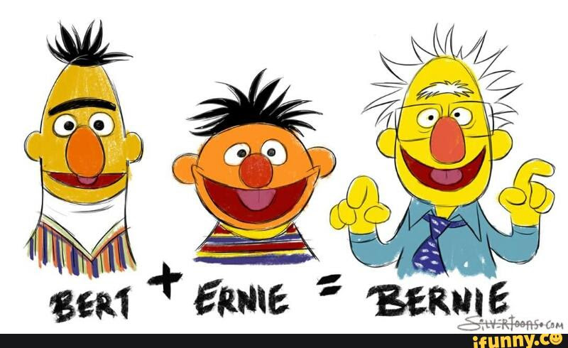

Welcome
This website is a very unique place that has a lot of projects (maybe) that I have created.
Despite all of the issues that I have encountered, I will continue on my path toward greatness.
On this website you can find all of the projects and other activities that I have been involved
in, as well as some of my awards and accomplishments that I have recieved.
Educational Goals
To develop two SMART (specific, measurable, achievable, results-focused, and time-bound) goals,
you have to be able to determine what it is that you want for a goal. My first goal
that I want to achieve is to practice my HTML skills by continuously improving my
site at least once every two months (or six times a year). The second SMART goal is
to be about my personal work ethic. I am going to spend at least an hour a week studying
and reviewing my previous courses and information that I have covered.
Employment Goals
Two SMART (specific, measurable, achievable, results-focused, and time-bound) employment goals that I have
for after college is to accomplish 30 hours of community service by the end of my senior year. The
second goal is to continue obtaining college credits, by earning atleast 10 college credits a year.
While both may sound rather daunting, I am already earning college credits by taking dual-credit classes
at the Miami Valley Career Technology Center (MVCTC), as well as outside of high school at Sinclair
Community College.
